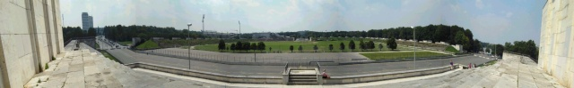
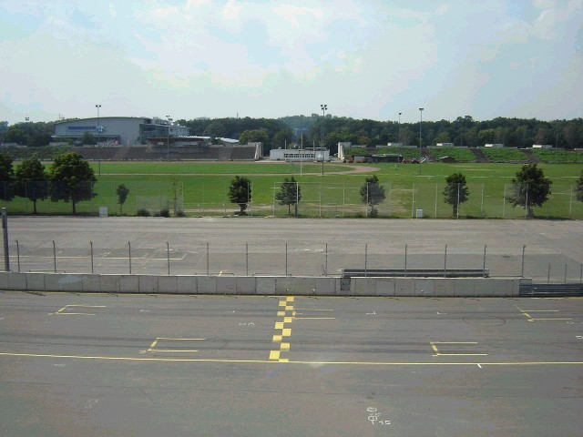
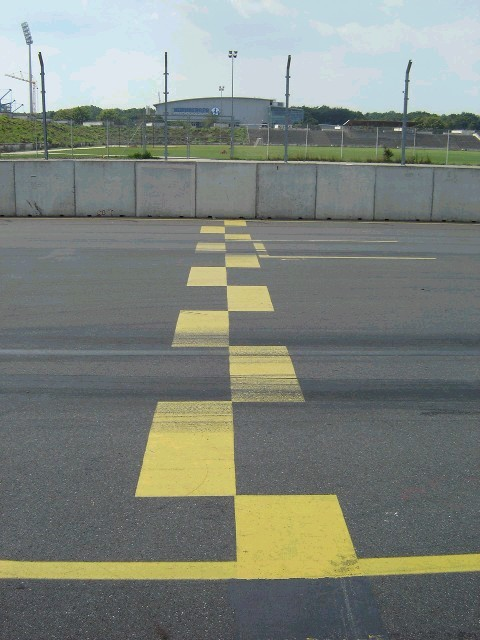
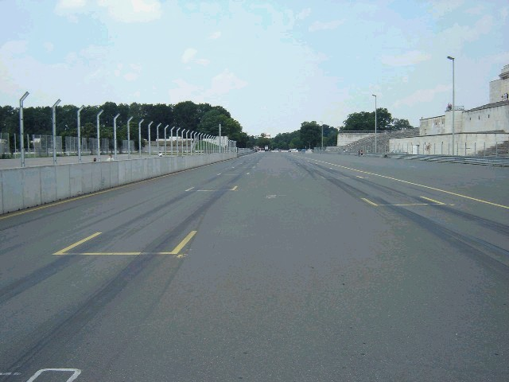
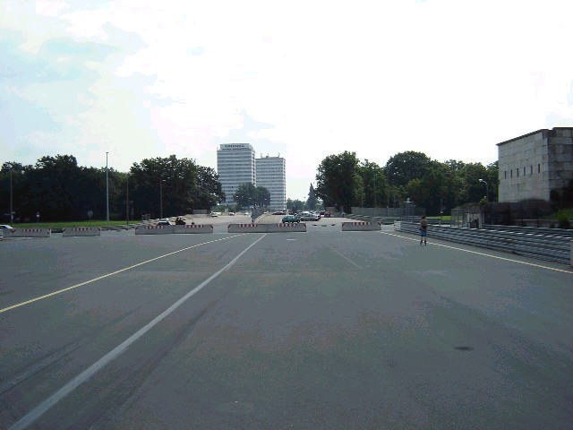
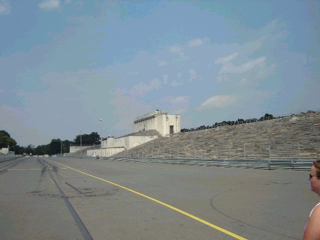
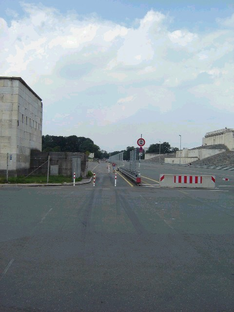

Numbers on the map represent the location of where the photos were taken. Click the hyperlinks above to view the photographs.
Norisring - Paddock and Grandstand
|| Contents | Paddock and Grandstands | Start and Turn 1 | Turn 2 to Finish || Home ||
Numbers on the map represent the location of where the photos were taken. Click the
hyperlinks above to view the photographs.
Return to racingcircuits.net's Photo Archive Main Index

P. A panoramic view from the grandstand. The yellow square on the
grandstand, in the centre of the photo, is the place where Adolf Hitler stood while
speaking to the 100,000 people at the Zeppelinfeld.

1. Looking from the grandstands to the start/finish-line.

2. The start/finish-line.

3. Looking back from the first startrow.

4. Looking forward from the first startrow.

5. The grandstand (Steintribüne).

6. The exit of the pitlane.
©Roelard Smit. Reproduced here with kind permission.